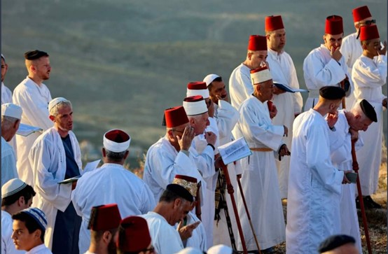
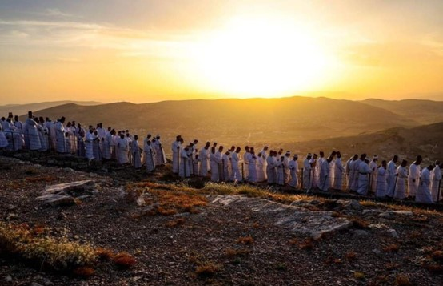

הר גריזים הוא ההר הדרומי של העיר שכם. עיר זו ממוקמת בין שני הרים, ההר הדרומי, הר גריזים, המתנשא לגובה של 881 מטרים מעל פני הים והוא מתנשא לגובה של כ-350 מ' מעל סביבתו, וההר הצפוני, הר עיבל, המתנשא לגובה של 940 מטרים מעל פני הים. הר גריזים, המקודש לשומרונים, נושא שם אחר, הר אט-טור, על שם הר סיני, שם אלוהים גילה את עשרת הדיברות בפני אדוננו משה.
הר גריזים ממוקם באמצע הדרך בין הים התיכון וים המלח. ממזרח להר זה קדוש לשומרונים שוכן מישור רוג'יב.
הר הקודשים גריזים; השומרונים חוזרים על שמו בתפילתם, בכל זמן שהוא, בנימה מוזיקלית אחת: "הר גריזים כל ימי חיינו". הר זה הוא העמוד הרביעי מבין חמשת עמודי התווך של הדת השומרונית: "אלוהים אחד, נבואת משה, חוק הקודש, קדושת הר גריזים והיום האחרון (יום הדין)".
הר גריזים עבור השומרונים הוא המקום הדתי הקדוש ביותר בעולם, וגריזים בעברית פירושו הר הפקודות, כלומר המקום שעליו יש להציע קורבנות, קורבנות, עולים ומעשרות לריבונו של עולם. ה 'בחר כאמור בחוק: ". (דברים יב פסוק יא).
המקום היחיד בעולם שהשריעה הבחין באומרו: "אז הניח את הברכה על הר גריזים". (דברים פרק יא פסוק כט). הר גריזים נזכר בתורה 13 פעם.
השומרונים מבצעים את הטקסים של ימי הפסח האחרונים עולים עם עלות השחר לפסגת הר גריזים, בעיר שכם, בצפון הגדה המערבית, כדי לבצע את טקסי החג שלהם.


סטטוס היסטורי
השומרונים אומרים שאלוהים ברא את אדוננו אדם מעפר הקודש של הר גריזים. זה היה לפני 6445 שנים, כלומר 4435 לפני הספירה. מכאן קדושת האדם. על פי אמונתם של השומרונים, המקום שאליו שלח אלוהים את אדם מגן העדן לאחר שלא ציית לפקודותיו של אדוניו נמצא ממזרח למסופוטמיה, שם החל הרבייה האנושית.
בתקופת שלטונו של א-צדיק "פלג", ודרגתו החמש עשרה בין שני החברים, נבנה מגדל בבל. פירוש השם "בבל", על פי האמונה השומרונית, שאלוהים בלבל בין לשונות בני האדם (שפותיהם), וחילק את כינוס האוכלוסייה באזורי כדור הארץ.
על פי המסופר השומרוני, אברהם אדונינו, שתופס את המקום העשרים בין הצדיקים לצדיקים, הגיע לארצות הכנעניות "ארצות הקודש" החל מהעיר שכם, ושם הוא עלה להר גריזים ובנה את המזבח הראשון. עליו לאחר שה 'הדריך אותו למקום הזה: "אברם חצה את הארץ למקום שכם אל אלון מורה .... ואז עבר משם להר המזרחי לבית אל" גריזים ".... הוא בנה שם מזבח לה 'וקרא בשם ה' "(בראשית פרק יב פסוק 6-9)
באשר לחלום שחיטת בן שחל על אברהם אדונינו, שהיהודים מאמינים כי התרחש בירושלים, והמוסלמים סבורים כי התרחשה במכה, השומרונים אומרים כי התרחשה במוריה, בסביבת שכם: " וזה קרה שאלוהים בדק את אברהם ואמר: קח את בנך, היחיד שלך. שיצחק אוהב, לך אל ארץ מוריה והציע לו שם כקורבן על אחד ההרים, אשר אני אומר לך "(בראשית) 22: פסוק 2).
וכאשר יעקב אדונינו נעקר, עוזב את הוריו, נמלט מעשיו אחיו ופנה לדודו לבן הארמי, במהלך המסע הזה, ובעודו ישן בהר גריזים, ראה בחלומו שהוא מסר את הבסיס שלו על הקרקע וסופו בשמים, והנה הוא אמר: "כמה המקום הזה מפחיד! אין זה אלא בית האלוהים, וזה שער השמים! (בראשית 28 פסוק 17)
וכאשר יעקב אדונינו חזר מדודו לבן, והוא התגורר בחרן, צפון סוריה, לאחר היעדרות של שלושים שנה, בילה עשרים שנה עם דודו לבן, ועשר שנים במקום ליד נהר המוג'יב שבירדן, שהוא כינה "סקוט", הוא בנה מזבח בהר גריזים. כפי שהבטיח ריבונו של עולם: "ויבא יעקב ללוזה, הנמצא בארץ כנען", שהיא בית אל, הוא וכל האנשים שהיו איתו, והוא בנה שם מזבח, והמקום נקרא "בית אל".
הקריינות השומרונית אומרת שכאשר בני ילדי ישראל הגיעו לשכם (שכם) בהנהגתו של יהושע בן נון, הם עלו להר גריזים ובנו את מקדש אדוני משה על פסגתו. מבנה זה עוסק בקיום. השנים שקדמו להיעלמות בית המקדש כונו "שנות הסיפוק" לנוכחות בית המקדש ביניהן. כאשר המלך (אדוננו) שלמה קיבל את השלטון ובנה את מקדשו בירושלים, התעוררה מחלוקת בין תושבי הדרום המיוצגים על ידי שבט יהודה ואיתם שבט בנימין (בנימין), ואנשי הצפון בראשות שבט אפרים ובני בריתם מתשעת השבטים האחרים. כאשר כבש רחבעם אבן שלמה את השלטון, מדינת העברים חולקה לשתי ממלכות. דרום וצפון. זה היה לפני 3150 שנה, ומאז התאריך הזה פרצה עוינות, שנמשכה עד היום בין השומרונים ליהודים, שסירבו מלחמות עזות בין שתי הקהילות, בנוסף למלחמות שהתחוללו בין השומרונים לבין כל אחת מהן. של האשורים, הבבלים, הפרסים, היוונים והביזנטיים, שהרגו מספר רב של שומרונים ומנעו את השומרונים בתקופת שלטונם היה 150 שנה של טיפוס לראש ההר והם נשללו מלתרגל את הטקסים הדתיים שלהם. וכאשר הגיע עידן המנהיג סלאח א-דין אל-איובי, שנעזר על ידי השומרונים במהלך מסעו נגד הצלבנים, הרי שהשומרונים השיגו ממנו ברית לקיום טקסים דתיים, במיוחד פסח. ברית זו נמשכה בתוקף עד עידן האימפריה העות'מאנית והתקופות שאחריה.
ארכיאולוגיה
על הר זה הוקם מקדש המתוארך לתקופה היוונית שכן הוא היה שייך לאל זאוס, בנוסף לגילוי עקבות של חורבה בשם חירבת אל-ראס, במיוחד באזור הצפוני של פסגת גריזים, והיא הגישה היא דרך גרם מדרגות המוביל גם למקדש המתוארך לתקופה היוונית.
בנוסף להקתיסמה שנבנתה במיוחד בתקופה הביזנטית, היא מבוצרת בחומה בתקופת השלטון השומרוני במדינה, במיוחד במאה השישית לספירה, ונהרסה כעבור מאות שנים.